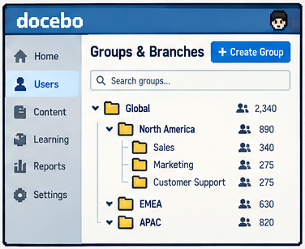
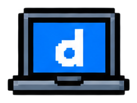
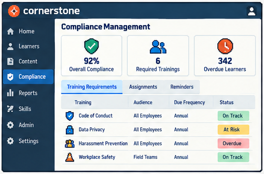
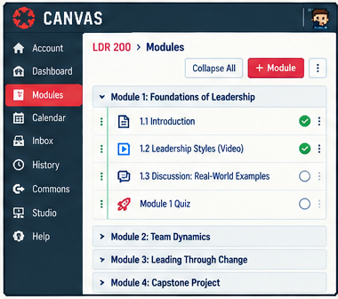
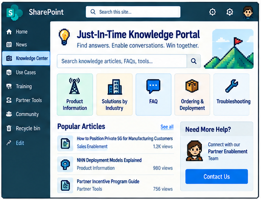

LMS Administration · Platform Strategy
My Approach for Various LMS Platforms
I start with the audience and learning decision, then choose platform structures that make the experience clear and the records trustworthy. The same objective takes a different shape in partner enablement, employee compliance, a cohort course, or a knowledge portal.


ENVIRONMENTS
01 / Extended Enterprise
Scale learning beyond one internal audience.
Partners and customers may need different catalogs, branding, certifications, and support while still sharing a maintainable core. The design priority is clear audience separation without copying the program into disconnected versions.
Docebo · direct experience
Route partners through groups, branches, and learning plans.
A growing partner program needs reliable access and certification without making every partner a one-off setup.
02 / Corporate Core
Connect requirements to employee records.
For internal learning, HR context, role changes, due dates, compliance, and performance workflows make the learner record operational. The priority is an explainable assignment and defensible completion history.

Cornerstone · platform-informed model
Make the certification lifecycle auditable.
An employee role carries a recurring training requirement with consequences beyond a course view.
03 / Academic + Cohort
Design for a learning rhythm, not only an assignment.
Academic and cohort-based learning depends on weekly progression, discussion, feedback, grading, and instructor visibility. I would structure the course so learners can see what is next and instructors can intervene while learning is underway.

Canvas · platform-informed model
Turn a syllabus into a visible weekly path.
A cohort needs a shared sequence, but each learner also needs timely feedback on practice.
04 / Knowledge Portal
Support the task at the moment of need.
SharePoint Sites is not a substitute for a tracked LMS requirement. It is useful when people need a current, searchable answer, job aid, or community resource in the flow of work. Findability and content ownership matter more than course completion.

SharePoint Sites · platform-informed model
Make current guidance easy to find and maintain.
A partner facing an unusual customer question needs a verified resource, not another full course.